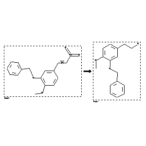

 |
| FA | RX(1); FLST(1); RX(3) |
Reaction (1 of 1)
| Reaction ID | 2079670 |
| Reactant BRN | 2060877 |
| Reactant | trans-b-nitro-4-methoxy-3-benzyloxy-styrene |
| Product BRN | 2220407 |
| Product | 3-benzyloxy-4-methoxy-phenethylamine |
| No. of Reaction Details | 3 |
Reaction Details (1 of 1)
| Reaction Classification | Preparation |
| Yield | 78 percent (BRN=2220407) |
| Reagent | LiAlH4 |
| Solvent | tetrahydrofuran |
| Time | 10 hour(s) |
| Other Conditions | Heating |
| Citation Pointer | 5817748; Journal; Horio, Takeshi; Yoshida, Kazuyo; Kikuchi, Hiroto; Kawabata, Jun; Mizutani, Junya; PYTCAS; Phytochemistry; EN; 33; 4; 1993; 807-808; |
Reaction Details (2 of 1)
| Reaction Classification | Preparation |
| Reagent | LiAlH4 |
| Solvent | tetrahydrofuran |
| Time | 7 hour(s) |
| Temperature | 23 |
| Citation Pointer | 6045092; Journal; Corey, E. J.; Gin, David Y.; TELEAY; Tetrahedron Lett.; EN; 37; 40; 1996; 7163-7166; |
Reaction Details (3 of 1)
| Reaction Classification | Preparation |
| Yield | 68 percent (BRN=2220407) |
| Reagent | LiAlH4 |
| Solvent | diethyl ether; tetrahydrofuran |
| Time | 2 hour(s) |
| Other Conditions | Heating |
| Citation Pointer | 6125152; Journal; Cabedo, Nuria; Protais, Philippe; Cassels, Bruce K.; Cortes, Diego; JNPRDF; J.Nat.Prod.; EN; 61; 6; 1998; 709-712; |
Reference (1 of 3)
| Citation Number | 5817748 |
| Document Type | Journal |
| Authors | Horio, Takeshi; Yoshida, Kazuyo; Kikuchi, Hiroto; Kawabata, Jun; Mizutani, Junya |
| CODEN | PYTCAS |
| Journal Title | Phytochemistry |
| Language Code | EN |
| (Series) Volume | 33 |
| Number | 4 |
| Publication Year | 1993 |
| Page | 807-808 |
Reference (2 of 3)
| Citation Number | 6045092 |
| Document Type | Journal |
| Authors | Corey, E. J.; Gin, David Y. |
| CODEN | TELEAY |
| Journal Title | Tetrahedron Lett. |
| Language Code | EN |
| (Series) Volume | 37 |
| Number | 40 |
| Publication Year | 1996 |
| Page | 7163-7166 |
Reference (3 of 3)
| Citation Number | 6125152 |
| Document Type | Journal |
| Authors | Cabedo, Nuria; Protais, Philippe; Cassels, Bruce K.; Cortes, Diego |
| CODEN | JNPRDF |
| Journal Title | J.Nat.Prod. |
| Language Code | EN |
| (Series) Volume | 61 |
| Number | 6 |
| Publication Year | 1998 |
| Page | 709-712 |